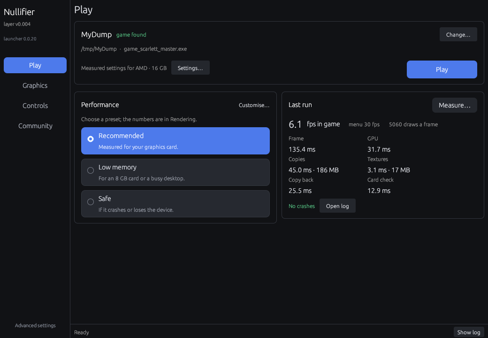
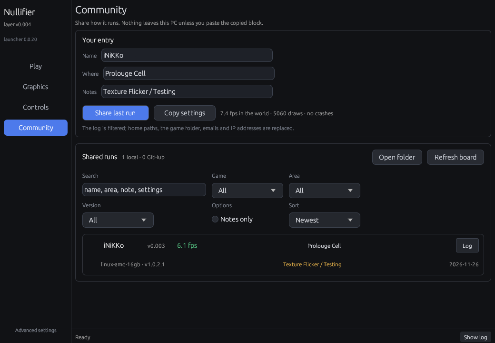
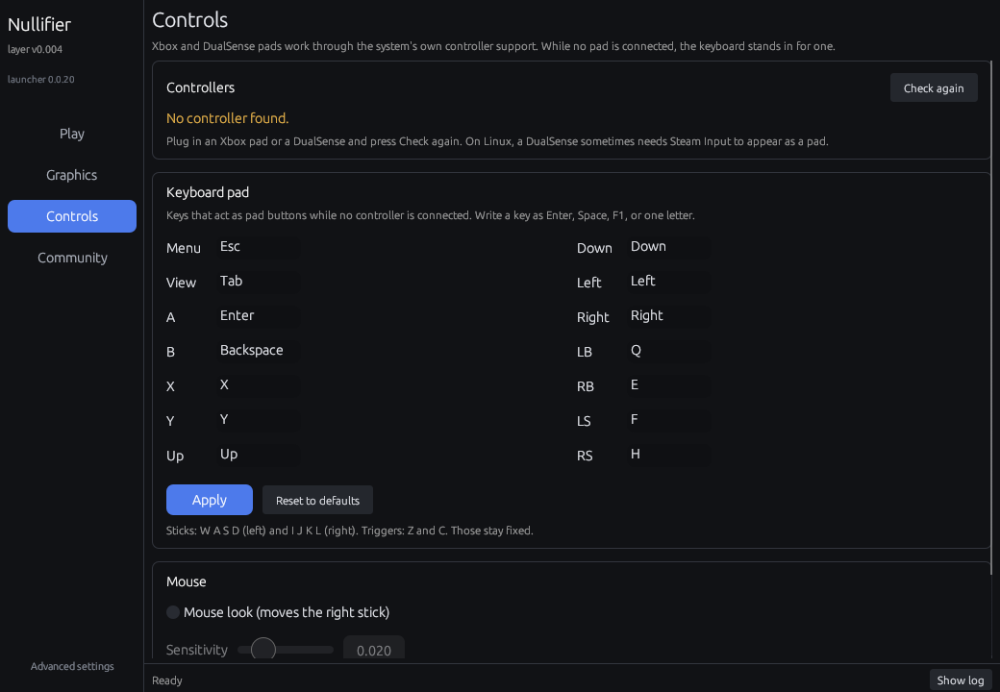
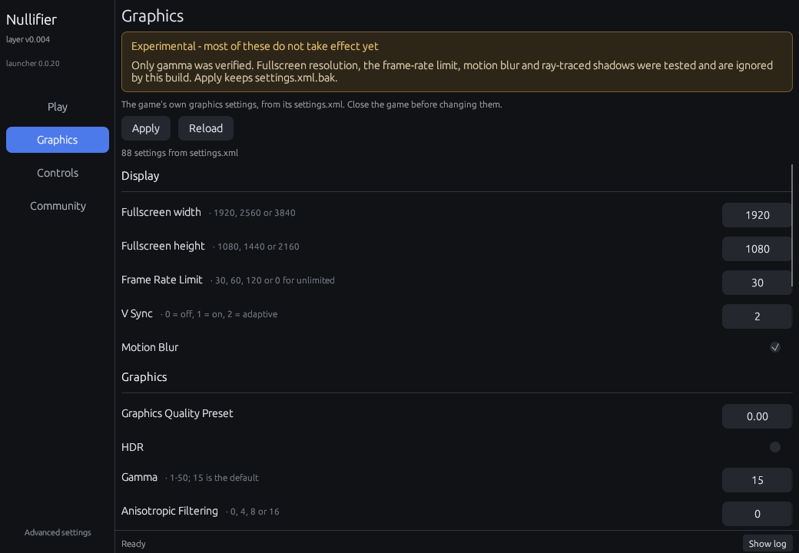

Run your Xbox copy on a PC.
A compatibility layer, not an emulator. The game's own code runs natively; Nullifier supplies the console platform and translates graphics to D3D12. Linux and Windows, AMD and NVIDIA.
Bring your own copy. This project contains no game files.
Do you want to…
Play
This is a tech demo. Menus, cutscenes, the prologue, the world, audio, input and saves work, but 5–6 fps is not playable at speed. The title's ray-traced light is missing, so shadowed areas are black.
You need
- Your own copy of the title (the folder with its
.exefiles). - Linux: a Vulkan-capable AMD or NVIDIA card,
clang,lld,python3,curl, and Proton (Steam installs one). - Windows 10/11: a D3D12 card with shader model 6.6 and mesh shaders.
Get it
There are no prebuilt binaries in the repository: build once, about ten minutes, then starts are instant. When releases are published they are torrent-only — download the magnet and keep seeding.
git clone https://github.com/iNiKKo/Nullifier.git
cd Nullifier
./tools/setup.sh
./tools/build-wineserver.sh # optional, several times the frame rate
./Nullifier.shIn the launcher: drop your game folder on the page, press Play. If the engine is missing, Set up now builds it.
# in PowerShell, inside the repository
cargo build --release -p nullifier
cargo build --release --manifest-path tools\launcher\Cargo.tomlInstall Rust from rustup.rs first. Then double-click Nullifier.bat, choose the game folder and press Play.
If it does not start
- Use
--safewith the command-line launcher. - Read the log in the launcher footer, or the console output.
- Ask in Discussions.
Contribute
Nullifier is GPL-3.0-or-later and needs help with the launcher, the community features, documentation, testing and performance. No game files ever go in the repository.
Have you used an AI assistant before?
Get an AI assistant
You do not need to be a programmer to start. An AI coding assistant can read the project rules, build the layer and make a first change with you.
- Install opencode — free and open source: opencode.ai (source). Follow the install for your OS.
- Get the code:
git clone https://github.com/iNiKKo/Nullifier.git cd Nullifier - Open the folder in opencode (run
opencodeinside it) and paste:Read AGENTS.md and docs/AI-NOTICE.md before touching anything. This is a GPL compatibility layer with no game files; users supply their own copy. Help me set up the project and pick a small first task. - Build it with
./tools/setup.sh(Linux) or the two cargo commands under Play → Windows.
Other assistants work too: Claude Code, Cursor, Copilot. Point
them at AGENTS.md and docs/AI-NOTICE.md.
Start with your assistant
Open the repository in your assistant and paste the same brief:
Read AGENTS.md and docs/AI-NOTICE.md before touching anything.
This is a GPL compatibility layer with no game files; users supply their own copy.
Then show me the build steps and three small tasks I can choose from.Good first areas
- Launcher & Community — layout, filters, sharing; no game needed.
- Docs & onboarding — this site, guides, troubleshooting.
- Testing — reproduce a report, add a check, write it down.
- Performance — the hard one; read
docs/FINDINGS.mdfirst.
The rules that matter
- No game files, assets or screenshots of the title.
- A performance claim needs three runs, median world frames, a picture over 50 KB, and the commit, GPU and environment reported.
- One idea per pull request; say what you measured.
What it looks like



